Introduction
Functional Principal Component Analysis (FPCA) is a cornerstone technique in functional data analysis. It extends classical PCA to infinite-dimensional function spaces, providing a powerful tool for dimension reduction, visualization, and feature extraction from functional data.
Why FPCA?
When working with functional data, we face several challenges:
- High dimensionality: Each curve is observed at many points
- Infinite-dimensional nature: Curves live in function spaces
- Correlation structure: Points on a curve are highly correlated
- Noise: Observations contain measurement error
FPCA addresses these challenges by finding the principal modes of variation in the data—orthogonal functions that capture how curves differ from each other.
Mathematical Background
The Karhunen-Loève Expansion
Any square-integrable random function can be represented as:
where:
- is the mean function
- are the eigenfunctions (functional principal components)
- are the scores (random coefficients)
The eigenfunctions satisfy:
where is the covariance function and are the eigenvalues (variances explained by each component).
Example: Growth Curves
Let’s demonstrate FPCA with simulated growth data showing different growth patterns.
# Simulate growth curves with two main modes of variation
n <- 50
m <- 100
t <- seq(0, 18, length.out = m) # Age 0-18 years
# Base growth pattern (logistic-like)
base_growth <- function(t) 50 + 130 / (1 + exp(-0.5 * (t - 10)))
# Generate curves with:
# - Overall height variation (PC1: taller/shorter)
# - Growth timing variation (PC2: earlier/later maturation)
X <- matrix(0, n, m)
height_effect <- rnorm(n, sd = 10) # Individual height differences
timing_effect <- rnorm(n, sd = 1.5) # Individual timing differences
for (i in 1:n) {
shifted_t <- t - timing_effect[i]
X[i, ] <- base_growth(shifted_t) + height_effect[i] + rnorm(m, sd = 2)
}
fd <- fdata(X, argvals = t)
plot(fd) +
labs(x = "Age (years)", y = "Height (cm)", title = "Simulated Growth Curves")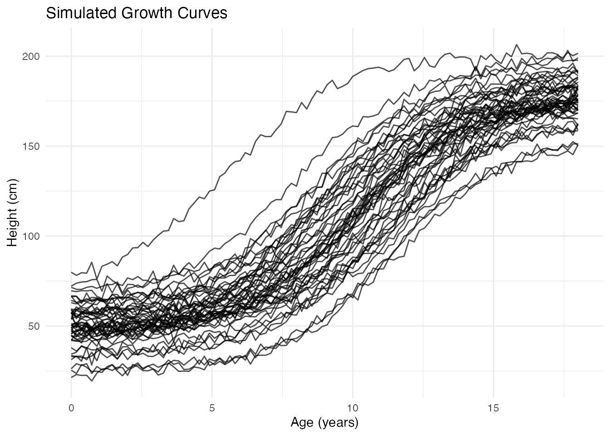
Performing FPCA
The fdata2pc() function computes the functional
principal components:
# Extract first 4 principal components
fpca <- fdata2pc(fd, ncomp = 4)
print(fpca)
#> Functional Principal Component Analysis
#> ========================================
#> Number of observations: 50
#> Number of components: 4
#>
#> Variance explained:
#> PC1: 92.4% (cumulative: 92.4%)
#> PC2: 5.9% (cumulative: 98.3%)
#> PC3: 1.6% (cumulative: 99.9%)
#> PC4: 0.1% (cumulative: 100.0%)The output shows:
- Singular values: Related to the importance of each component
- Variance explained: Percentage of total variance captured by each PC
- Cumulative variance: Running total—often we aim for 90-95%
Visualizing FPCA Results
Principal Component Functions
The plot() method with type = "components"
shows how each PC affects the mean curve. Each component is displayed in
its own facet for clear comparison:
plot(fpca, type = "components", ncomp = 3, multiple = 2)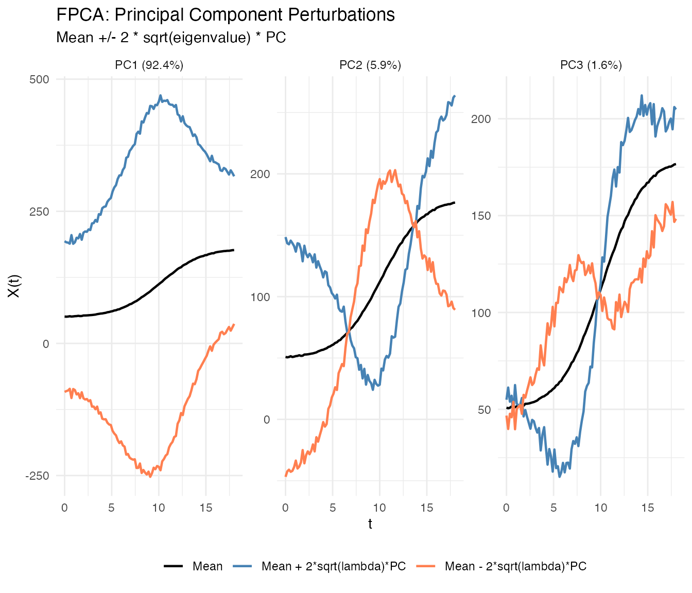
Each facet shows one principal component with solid lines differentiated by color:
- Black: Mean function
- Blue: Mean + perturbation ()
- Coral: Mean - perturbation ()
where scales the perturbation by the component’s importance.
You can show only the positive perturbation by setting
show_both_directions = FALSE:
plot(fpca, type = "components", ncomp = 2, show_both_directions = FALSE)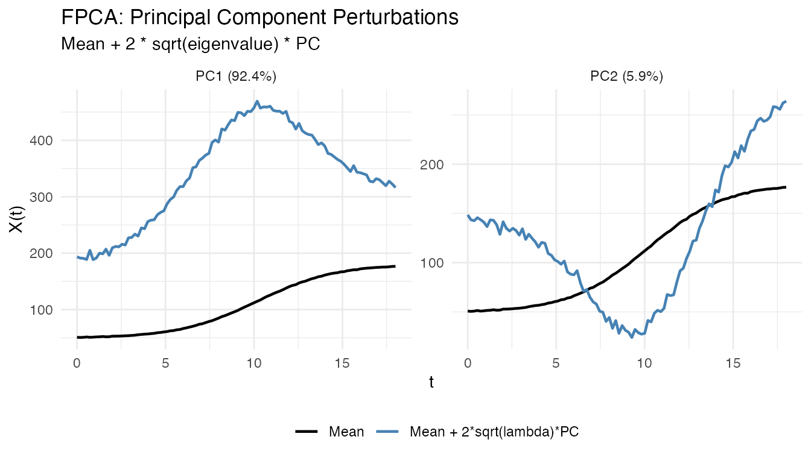
Interpretation:
- PC1: Overall height differences (taller vs shorter individuals)
- PC2: Growth timing (earlier vs later maturation)
- PC3: More subtle shape variations
Eigenfunctions
The eigenfunctions themselves show the shape of each mode of variation:
# Plot the first 3 eigenfunctions
df_eigen <- data.frame(
t = rep(t, 3),
loading = c(fpca$rotation$data[1, ], fpca$rotation$data[2, ], fpca$rotation$data[3, ]),
PC = factor(rep(paste0("PC", 1:3), each = m))
)
ggplot(df_eigen, aes(x = t, y = loading, color = PC)) +
geom_line(linewidth = 1) +
geom_hline(yintercept = 0, linetype = "dashed", alpha = 0.5) +
scale_color_brewer(palette = "Set1") +
labs(x = "Age (years)", y = "Loading",
title = "Principal Component Eigenfunctions")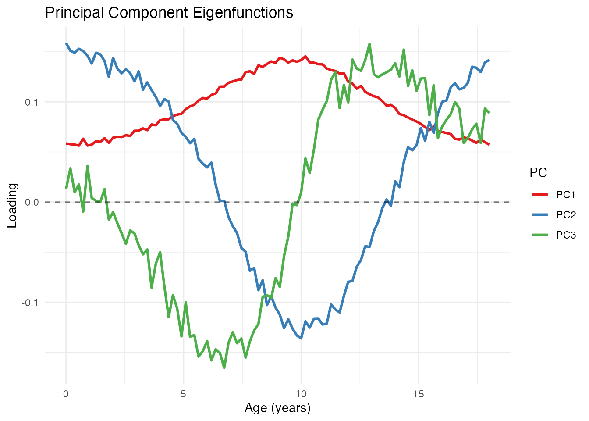
Scree Plot
The variance plot shows how much each component contributes:
plot(fpca, type = "variance")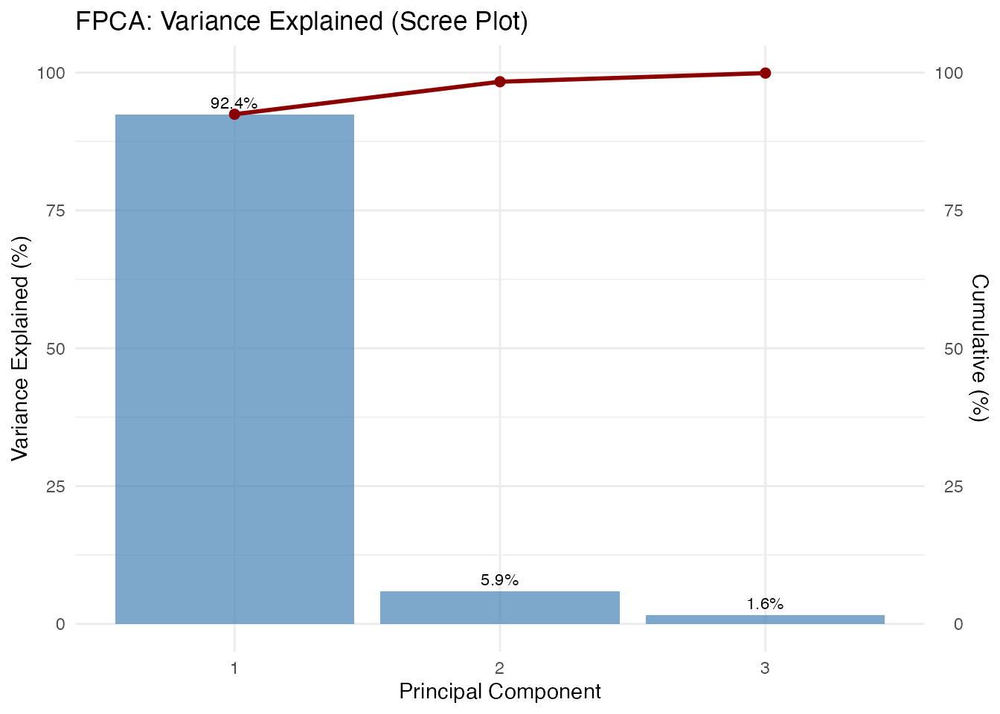
The scree plot helps decide how many components to retain. Common criteria:
- Retain components explaining 90-95% cumulative variance
- Look for an “elbow” where explained variance drops sharply
- Use cross-validation for prediction tasks
Score Plot
The scores show where each observation falls in PC space. Each point is labeled with its observation ID, allowing you to identify specific curves of interest:
plot(fpca, type = "scores")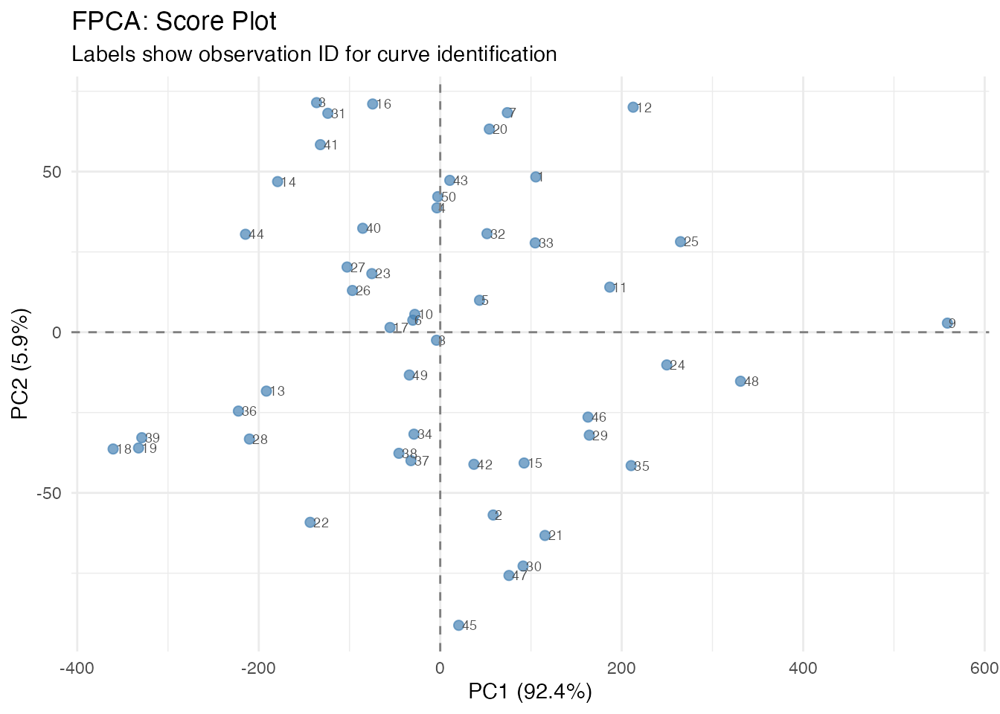
Curves with similar scores have similar shapes. Outliers appear far from the center.
Plotting Individual Curves by ID
After identifying interesting observations in the score plot (e.g., outliers or extreme cases), you can plot them separately to understand what makes them unusual:
# Identify extreme observations from the score plot
# High PC1 = taller individuals, Low PC1 = shorter individuals
# High PC2 = later maturation, Low PC2 = earlier maturation
# Find observations at extremes
extreme_tall <- which.max(fpca$x[, 1])
extreme_short <- which.min(fpca$x[, 1])
extreme_late <- which.max(fpca$x[, 2])
extreme_early <- which.min(fpca$x[, 2])
# Plot these specific curves
ids_of_interest <- c(extreme_tall, extreme_short, extreme_late, extreme_early)
labels <- c("Tallest (high PC1)", "Shortest (low PC1)",
"Late maturer (high PC2)", "Early maturer (low PC2)")
df_selected <- data.frame(
t = rep(t, length(ids_of_interest)),
height = as.vector(t(fd$data[ids_of_interest, ])),
curve = factor(rep(labels, each = m), levels = labels),
id = rep(ids_of_interest, each = m)
)
ggplot(df_selected, aes(x = t, y = height, color = curve)) +
geom_line(linewidth = 1) +
scale_color_brewer(palette = "Set1") +
labs(title = "Curves at Score Plot Extremes",
subtitle = paste("IDs:", paste(ids_of_interest, collapse = ", ")),
x = "Age (years)", y = "Height (cm)", color = "") +
theme(legend.position = "bottom")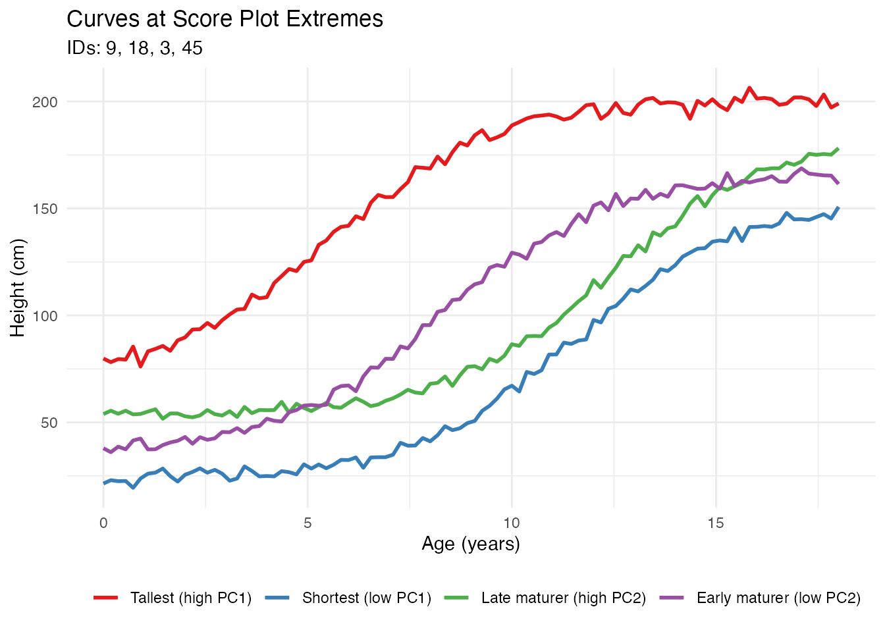
This workflow allows you to: 1. Identify interesting observations in the score plot by their IDs 2. Extract and visualize those specific curves 3. Understand why certain observations are outliers or have extreme scores
Benefits of FPCA
1. Dimension Reduction
FPCA reduces infinite-dimensional curves to a few scores:
# Original data: 50 curves x 100 points = 5000 values
cat("Original dimensions:", nrow(fd$data), "x", ncol(fd$data), "\n")
#> Original dimensions: 50 x 100
# After FPCA: 50 curves x 4 scores = 200 values
cat("Reduced dimensions:", nrow(fpca$x), "x", ncol(fpca$x), "\n")
#> Reduced dimensions: 50 x 4
# Compression ratio
cat("Compression:", round(100 * (1 - prod(dim(fpca$x)) / prod(dim(fd$data))), 1), "%\n")
#> Compression: 96 %2. Denoising
Reconstructing curves from a few PCs removes noise:
# Reconstruct using only first 2 PCs
scores_2pc <- fpca$x[, 1:2]
loadings_2pc <- fpca$rotation$data[1:2, ]
# Reconstruction: X_reconstructed = mean + scores %*% loadings
X_reconstructed <- matrix(fpca$mean, n, m, byrow = TRUE) + scores_2pc %*% loadings_2pc
# Compare original noisy curve with reconstruction
i <- 1 # First curve
df_denoise <- data.frame(
t = rep(t, 2),
height = c(fd$data[i, ], X_reconstructed[i, ]),
type = rep(c("Original (noisy)", "Reconstructed (2 PCs)"), each = m)
)
ggplot(df_denoise, aes(x = t, y = height, color = type)) +
geom_line(linewidth = 1) +
scale_color_manual(values = c("Original (noisy)" = "gray50",
"Reconstructed (2 PCs)" = "steelblue")) +
labs(x = "Age (years)", y = "Height (cm)",
title = "Denoising via FPCA Reconstruction") +
theme(legend.position = "bottom", legend.title = element_blank())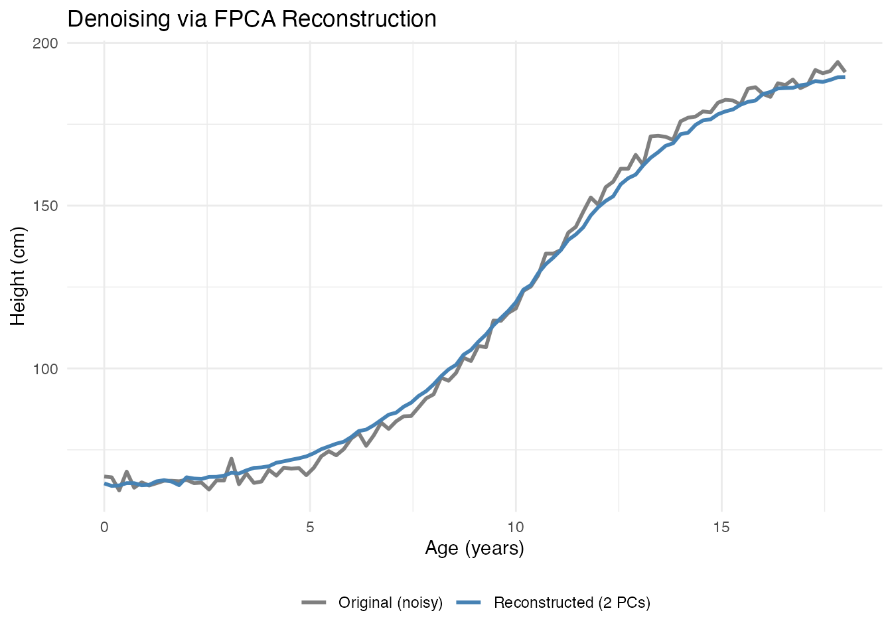
3. Interpretable Features
PC scores serve as meaningful features for further analysis:
# Scores as features
scores_df <- data.frame(
curve_id = 1:n,
PC1 = fpca$x[, 1],
PC2 = fpca$x[, 2],
true_height = height_effect,
true_timing = timing_effect
)
# PC1 correlates with height variation
cat("Correlation(PC1, height effect):",
round(cor(scores_df$PC1, scores_df$true_height), 3), "\n")
#> Correlation(PC1, height effect): 0.784
# PC2 correlates with timing variation
cat("Correlation(PC2, timing effect):",
round(cor(scores_df$PC2, scores_df$true_timing), 3), "\n")
#> Correlation(PC2, timing effect): 0.5964. Outlier Detection
Extreme scores indicate unusual curves:
# Mahalanobis-like distance using PC scores
pc_vars <- fpca$d^2 / (n - 1) # Variance of each PC
standardized_scores <- sweep(fpca$x, 2, sqrt(pc_vars[1:ncol(fpca$x)]), "/")
distances <- rowSums(standardized_scores^2)
# Flag potential outliers (chi-squared threshold)
threshold <- qchisq(0.975, df = ncol(fpca$x))
outlier_idx <- which(distances > threshold)
cat("Potential outliers:", length(outlier_idx), "curves\n")
#> Potential outliers: 1 curves5. Efficient Storage and Computation
For large datasets, storing scores instead of full curves saves memory:
# Storage comparison
original_size <- object.size(fd$data)
compressed_size <- object.size(fpca$x) + object.size(fpca$rotation$data) + object.size(fpca$mean)
cat("Original size:", format(original_size, units = "Kb"), "\n")
#> Original size: 39.3 Kb
cat("FPCA representation:", format(compressed_size, units = "Kb"), "\n")
#> FPCA representation: 5.9 KbFPCA for Regression
PC scores are commonly used as predictors in regression:
# Create a response related to growth
# Final height depends on both baseline and timing
y <- 0.5 * height_effect + 2 * timing_effect + rnorm(n, sd = 1)
# Principal Component Regression
fit <- fregre.pc(fd, y, ncomp = 3)
# Cross-validation to select optimal number of components
cv_result <- fregre.pc.cv(fd, y, kfold = 5, ncomp.range = 1:6, seed = 42)
cat("Optimal number of components:", cv_result$optimal.ncomp, "\n")
#> Optimal number of components: 6
# Visualize CV results
df_cv <- data.frame(
ncomp = 1:6,
MSE = cv_result$cv.errors,
se = cv_result$cv.se
)
ggplot(df_cv, aes(x = ncomp, y = MSE)) +
geom_line(color = "steelblue", linewidth = 1) +
geom_point(color = "steelblue", size = 3) +
geom_errorbar(aes(ymin = MSE - se, ymax = MSE + se), width = 0.2, color = "steelblue") +
geom_vline(xintercept = cv_result$optimal.ncomp, linetype = "dashed", color = "red") +
labs(x = "Number of Components", y = "Cross-Validation MSE",
title = "Selecting Number of PC Components") +
scale_x_continuous(breaks = 1:6)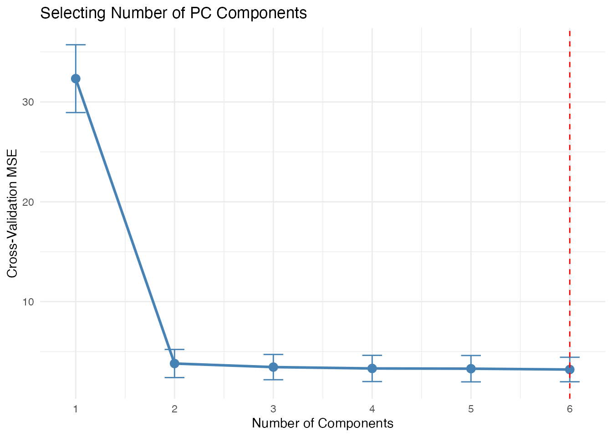
Choosing the Number of Components
Several approaches exist for selecting the number of components:
Advanced: Working with Scores
Clustering in PC Space
# K-means clustering on PC scores
km <- kmeans(fpca$x[, 1:2], centers = 3, nstart = 10)
# Visualize clusters
df_scores <- data.frame(
PC1 = fpca$x[, 1],
PC2 = fpca$x[, 2],
cluster = factor(km$cluster)
)
ggplot(df_scores, aes(x = PC1, y = PC2, color = cluster)) +
geom_point(size = 3) +
labs(title = "Clustering in PC Score Space") +
scale_color_brewer(palette = "Set1")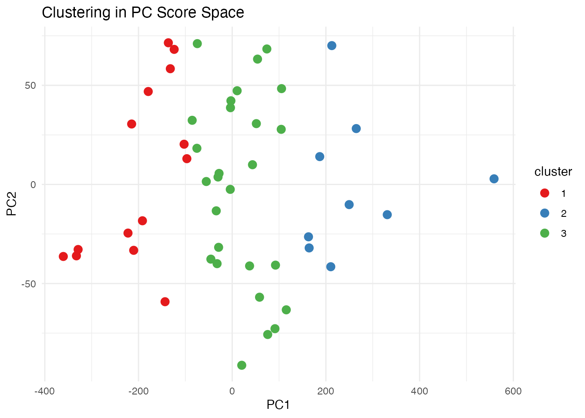
Functional Boxplot via FPCA
The functional boxplot uses depth measures, but PC scores provide an alternative view of centrality:
# Distance from center in PC space indicates "outlyingness"
center <- colMeans(fpca$x)
pc_distances <- sqrt(rowSums(sweep(fpca$x, 2, center)^2))
# Color curves by distance from center
df_curves <- data.frame(
t = rep(t, n),
height = as.vector(t(fd$data)),
curve_id = rep(1:n, each = m),
distance = rep(pc_distances, each = m)
)
ggplot(df_curves, aes(x = t, y = height, group = curve_id, color = distance)) +
geom_line(alpha = 0.7) +
scale_color_viridis_c(option = "plasma", name = "PC Distance") +
labs(x = "Age (years)", y = "Height (cm)",
title = "Curves Colored by Distance from PC Center")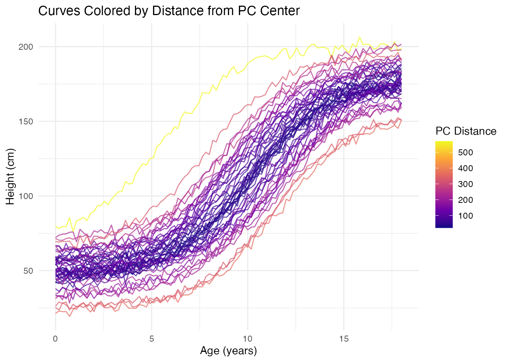
Comparison with Classical PCA
FPCA on discretized curves is mathematically equivalent to classical PCA on the data matrix, but the functional interpretation adds value:
| Aspect | Classical PCA | FPCA |
|---|---|---|
| Input | Vectors in | Functions in |
| Output | Loading vectors | Eigenfunction curves |
| Interpretation | Variable weights | Modes of variation |
| Reconstruction | Linear combination | Functional approximation |
| Smoothness | Not enforced | Can be regularized |
References
- Ramsay, J.O. and Silverman, B.W. (2005). Functional Data Analysis, 2nd Edition. Springer.
- Ramsay, J.O. and Silverman, B.W. (2002). Applied Functional Data Analysis. Springer.
- Yao, F., Müller, H.G., and Wang, J.L. (2005). Functional Data Analysis for Sparse Longitudinal Data. Journal of the American Statistical Association, 100(470), 577-590.